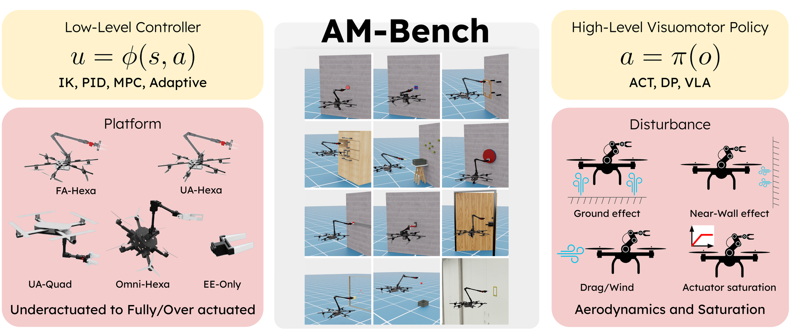

IROS 2026 · MoMA.v5 Workshop
Aerial manipulation in the wild
Outdoor aerial manipulation with an onboard view of the robot interacting with a target.
Read the paper ↗PENN STATE · AERIAL ROBOTICS
PhD Candidate in Aerospace Engineering
Pennsylvania State University

Hi! I am a PhD candidate in Aerospace Engineering at Pennsylvania State University, advised by Junyi Geng.
I study aerial autonomy and dexterous, contact-rich aerial manipulation. My goal is to enable aerial robots to perceive, plan, and act reliably in unstructured environments, and to interact precisely with objects and surfaces.
My work connects onboard perception, policy learning, and control, from autonomous flight to physical interaction. I received my B.Eng. in Intelligence Science and Technology from Nankai University in 2024.
IROS 2026 · MoMA.v5 Workshop
Outdoor aerial manipulation with an onboard view of the robot interacting with a target.
Read the paper ↗
2024 – Present
PhD in Aerospace Engineering
State College, USA · GPA: 3.97 / 4.00
2020 – 2024
B.Eng. in Intelligence Science and Technology
Tianjin, China · GPA: 3.78 / 4.00
Reviewer